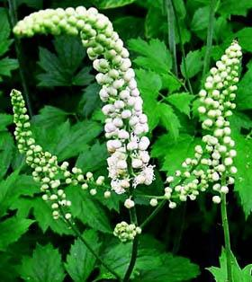

| herbal remedy | sign in register |
|
Black cohosh
UseThere is a lack of consensus regarding whether black cohosh is useful for managing some symptoms of menopause. Some official groups state black cohosh can be considered as an alternative nonhormonal therapy for vasomotor symptoms, whereas others state there is a lack of consistent evidence of benefit. DosingBlack cohosh extract is generally standardized to 2.5% of triterpene glycosides (ie, 1 mg/dose). Based on clinical use of commercial products, the current recommended black cohosh dose for management of symptoms of menopause is 40 to 80 mg/day, often in divided doses. Therapeutic effects generally begin after 2 weeks of treatment, with maximum effects usually occurring within 8 weeks. ContraindicationsContraindicated in individuals with aspirin sensitivity because black cohosh contains salicylic acids. Pregnancy/LactationAvoid use in pregnancy and lactation. Black cohosh has been used to improve pregnancy rates following in vitro fertilization and in women with polycystic ovarian syndrome (PCOS). Premature birth may occur with large doses. Concerns regarding labor-inducing, hormonal, emmenagogic, and anovulatory effects exist, based on low-level evidence and expert opinion. Adverse ReactionsBlack cohosh is associated with a low incidence of adverse reactions. There are concerns regarding rare, but serious, hepatotoxicity. |